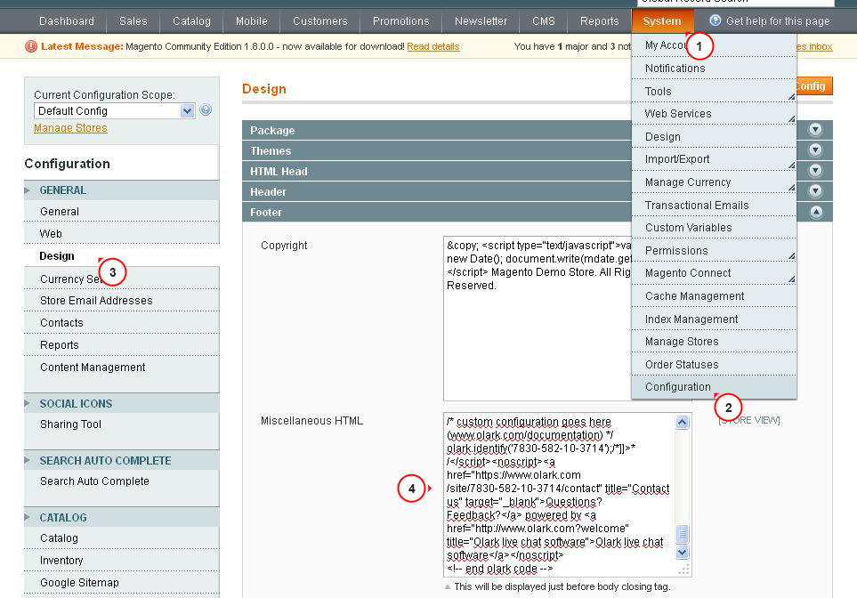

Introduction What can be found in this package and what it can be used for
Thank you for purchasing a Magento template. This documentation consists of several parts and shows the entire process of how to set up and administer a Magento store from scratch. We did our best to make this manual as clear and easy to follow as possible.
What is Magento Commerce?
Magento is a feature-rich eCommerce platform built with open-source technology. It provides flexibility and control over the look, content and functionality of the eCommerce store. Magento’s intuitive administration interface features powerful marketing, search engine optimization and catalog-management tools to give merchants the power to create sites that are tailored to their unique business needs. Designed to be completely scalable and backed by Varien's support network, Magento offers companies the ultimate eCommerce solution. More information
What is a Magento theme?
Magento theme is a complete design for your online store based on Magento engine. In other words, you can easily change your Magento shop appearance by installing a new theme in a few easy steps. With all of its simplicity a Magento theme is provided with all the necessary source files that you can edit or extend the way you need.
Files structure
The theme package you have downloaded consists of several folders. Let's see what each folder contains:
- Documentation - contains documentation files.
- documentation.html - a main documentation file you are reading at the moment.
- screenshots - contains the theme screenshots. Not for production.
- sources - contains the theme source files.
- psd - contains the theme Adobe Photoshop source files (.psd).
- demo - contains additional pages and custom blocks provided with the theme.
- sample_data - contains Magento theme sample data files.
- media - contains files and directories that should be uploaded to the root directory of your Magento installation.
- dump.sql.gz - the database backup file. Contains the theme sample content.
- theme### - contains Magento theme files and directories that should be uploaded to the root directory of your Magento installation.
- fonts_info.txt - contains the links where the template custom fonts can be downloaded.
- info.txt - contains instructions on how to extract source files.
Complete installation
You can use this method if you do not have a Magento store and want to install it from scratch. You'll have Magento Commerce engine, Magento theme, sample data and all the required extensions installed.
Theme installation
You can use this method if you do have a Magento store and want to change its appearance by installing a new theme. You'll have a Magento theme and all the required extensions installed.
Preparations
Before you proceed to set up your Magento store, please make sure you are fully prepared. Please complete the following preparation steps:
Editing software
To feel comfortable working with Magento template, we recommend downloading all the applications required. You can see the list of required software on the template preview page. The requirements may vary for different templates, for most templates they are the following:
- First, you need to use WinZip 9+ (Windows) and Stuffit Expander 10+ (Mac) to extract the password protected sources_#########.zip archive.
- You may also need the Adobe Photoshop application. It is used to edit .PSD source files, and it is necessary if you want to edit template design graphics and images.
- To edit template source code files, you need some code editor like Adobe Dreamweaver, Notepad++, Sublime Text, etc.
- To upload files to the hosting server you may need an FTP Manager like Total Commander, FileZilla, CuteFTP, etc.
Hosting
As Magento Commerce is a PHP/MySQL based application, you need to prepare a hosting environment to run Magento.
If you have live hosting, please make sure it matches Magento requirements and is ready to be used for Magento store.
Otherwise, you can run Magento locally on your computer using the local server. To create a local hosting server please use the localhost applications such as WAMP, AppServ, MAMP etc. Any of those can be easily installed as any other program and used to run Magento.
Please check the following tutorials on how to configure the local development environment:
Complete installation
The complete installation method can be used if you want to set up a Magento store using a sample content. We assume that you have completed all the preparation steps.
The installation process consists of 3 stages:
- Creating a database.
- Uploading all the required files to the server.
- Installing a Magento Commerce engine together with the template you have purchased.
Let's get started!
1. Creating a database
First, you need to prepare a new database for your Magento store. You can create the new database using the database management tool from your hosting control panel (usually PhpMyAdmin).
The following data will be received while creating a database: database name, database username, password and you server name. You need to save this data as you will need it for further Magento installation.
With the phpMyAdmin tool you will be able to create a new database in 3 simple steps(check the slides below):
- Click the Database button from the top navigation menu to access the database listing.
- Input the database name into the "Create new database" field.
- Click the Create button on the right side.
Your database can be seen in the database listing now. Click on its name to get access to the database:
-

1. Open the "Database" tab, you will see the list of databases.
-

2. Input your database name
3. Click "Create" button
-

4. Your database has appeared in the list. In order to enter the database, click on its name in the list.
You can also check the detailed video tutorial on How to create a database
If you have any issues with creating a database, please contact your hosting provider for help and assistance.
2. Sample data import
Magento template package contains the sample data file (dump.sql or dump.gz). This file is located under the /sources/sample_data folder of your template. It allows you to load sample data, so that your website looks exactly like our demo template.
Do not import dump.sql.gz if you already have the data on your site. By importing dump.sql.gz all the products will be erased from your store. If you do not want to install sample data, use clean database while installing Magento. Skip the sample data installation step.
In order to install the dump file, follow the steps below:
- Log into PhpMyAdmin and the select the database that you will use for Magento Commerce (It was created by you with the help of the steps provided earlier).
- Navigate to "Import" tab and click "Browse" button.
- Find the "/sources/sample_data" folder of your template and select the dump.sql.gz.file.
- Click. "GO". The import process can take a few minutes.
-

1. Select the database that you will use for Magento Commerce.
2. Select "IMPORT".
3. Click "Browse" button.
-

4. Navigate to the "/sources/sample_data" folder of your template package and select dump.sql.gz file.
-

5. Click "GO".
3. Downloading the engine from the official website
In order to install Magento, you need to download the archive file from the official website www.magentocommerce.com/download.
Select the archive type from the drop-down menu and click Download. It is necessary to register the account on Magento website in order to download the engine.
Make sure to download the compatible with our template version of Magento engine. You can find all available Magento versions at the same page, in the Release Archives tab.
4. Extracting files
When you are done with the download, you'll need to extract the files from the Magento engine package.
This can be done with any archive manager like WinZip(PC), StuffitExpander(MAC), etc.
Please check the following tutorials on how to extract files from the archives with WinZip(PC) and StuffitExpander(MAC).
Please note: if your hosting control panel has the option to 'Extract' files, you can use it and extract the files directly on your server after the upload. It will speed up the process of files uploading.
5. Uploading Magento engine files
In case you extracted the files locally on your computer, you need to upload them to your hosting server.
This can be done using the hosting control panel File Manager or with any FTP Manager applications like: FileZilla, TotalCommander, CureFTP, etc.
You can check the detailed video tutorial on How to upload files to a server using an FTP manager and How to upload files to a server using cPanel (WebHost Manager, WHM).
6. Uploading theme files
The next step of the setup procedure is the template installation. The template should be installed in any case, whether you use sample data or not.
- First of all, open the template package and go to the theme###folder.
- Upload theme### folder contents to the Magento installation directory (upload "app", "skin" and other folders). These folders contain the theme files. They will not affect your existing files.
- If you have imported the dump.sql.gz file and are going to use the template sample data, you need to upload the product images. Upload the "media" folder from the template sources/sample_data directory to the Magento installation root directory.
- If you didn't install the dump.sql.gz file, there is no need to upload the "media" folder.
7. Magento engine installation
When you are done with uploading files, you can start with Magento engine installation. Open your browser and in the address bar type your 'domain name/path to your Magento directory'. You should see the welcome screen. Please follow the instructions below to install Magento.
Please note: the dump.sql.gz file should be imported into the clear database BEFORE you install Magento.
Step 1: Installation Assistant
Please read the license agreement and click the "I agree to the above terms and conditions" checkbox if you agree with the terms.
Step 2: Installation Assistant (Localization)
Select the Locale, Time Zone and default currency. The Locale option defines your Magento store backend language. If you want to change the frontend language, you need to download and install Magento frontend locales. All the options can be easily changed later using the Magento admin panel.

Step 3: Configuration
Here you need to input the store database details and some initial settings. Database Connection – input the database host name, user name, password and name. Contact your hosting provider if you don't have the necessary details.
Make sure you have a database created for the Magento installation. And also make sure it is clear, without any tables. Web access options and Session Storage Options – please leave the options without any changes if you are not sure. The default settings usually work fine.

If everything is correct, please click 'Continue' button.
Step 4: Create Admin Account
Here you need to input personal details for the store owner and administrator.

When you are done, click 'Continue' button.
Step 5: You are All Set
This is the final step of installation. Copy the generated encryption key and keep it safe. You can use the buttons in the bottom right corner to view the store front end and the admin panel.

Magento template installation
First of all, please make sure your Magento installation version meets the template requirements. If you are using an outdated version of Magento, you need to upgrade it. Don't forget to back up the files and the database. Magento upgrade instructions are available at the Magento Wiki website.
If your Magento engine meets the template requirements, you can start the template installation.
- Open the template package and go to the theme### folder.
- Upload theme### folder contents to the Magento installation directory (upload "app", "skin" and other folders). These folders contain the theme files. They will not affect your existing files.
1. Template configuration
We are going to review template configuration options based on the example. It is configured the same way as our Live Demo template, without affecting products data.
Activate the new template
- Open Magento admin panel and navigate to System > Design in the top menu.
- Click the "Add Design Change" button.
- In the "Custom Design" field, select the theme name (for example, theme###).
- Click "Save" button to confirm the changes.


Reindex data
- Open the Magento admin panel and in the top menu select System > Index Management.
- Check the "Select All" box in the top left corner.
- In the "Actions" field select "Reindex Data".
- Click "Submit" button.
- Please be patient, this may take a while.


Disable cache
In order to make the changes appear on your website with no delay, you need to disable cache. It prevents additional cache clearing actions after every change you make. You can enable it when you are done with store editing.
- Open Magento admin panel and navigate to System > Cache Management in the top menu.
- In the top left corner click "Select All".
- On the right side, in the "Actions" field select "Disable".
- Click "Submit" button.

2. Logo configuration.
Please follow these steps when setting up logo image included into the theme package (you can view it on the Live Demo page).
- Open the Magento admin panel and select System > Configuration in the top menu .
- Select the "Design" tab.
- In the "Header" section, edit the "Logo Image Src" field value. Change it from "gif" to "png".
- Click "Save Config" button.
In order to install your company logo, you need to upload the logo image file into the /images folder of your Magento theme.


3. Pages configuration
In order to make your template look exactly like our Live Demo, you need to set up store pages in a specific way. We provide all the files with the pages source code. You need to add them into Magento admin panel as per the instructions below using the settings table. Settings table is located on the Technical details page on the template preview page. The documentation file contains the link to this page:
- Documentation
- documentation.html
Settings table example:
| # | Page Name | Page HTML (Content tab) | Page XML (Design tab) | Layout |
|---|---|---|---|---|
| 1. | Home Page | sources\demo\pages\home_page.phtml | sources\demo\pages\home_page.xml | 1 column |
| 2. | About Us | sources\demo\pages\about_us.phtml | NA | 1 column |
| 3. | Customer Service | sources\demo\pages\customer_service.phtml | NA | 1 column |
| 4. | Privacy Policy | sources\demo\pages\privacy_policy.phtml | NA | 1 column |
The main template page will be affected the most. It usually contains the following elements: banners, slider, gallery, etc.
We recommend that you disable the WYSIWYG editor. To do this, from the admin top menu select System > Configuration. Open the "Content Management" section and in the WYSIWYG Options window set "Enable WYSIWYG Editor" option to "Disabled Completely".

In case you have already made the changes to your pages code and would like to add our code without affecting your changes, it is recommended to contact professional technicians or prepare a backup before making changes.
- From the top menu select CMS > Pages. Here you can find all the store pages. Home page, About Us and Customer Service should already be available, so you don't need to add them. You only need to update the pages HTML and XML content. Open any of them in order to get the access to the content.
- Open the page and select the Content tab. It contains the HTML code of the page. You can take the page HTML code from the appropriate source file. You can see the list of source files included in the "Template Settings" section on your templates preview page. Copy the code from the source file and paste it to the content area.
- When you are done with the HTML code, switch to "Design" tab. It contains the page XML code. XML code allows you to add Magento static blocks and widgets to the page. The XML code should be copied the same way as the HTML from the source file. Copy the XML code to the "Layout Update XML" area.
- Don't forget to select the valid "Layout" option.
- In case you need to add a new page, click the "Add New Page" button in the top right corner.


In case you have any difficulties, please check the detailed tutorial on How to configure pages manually.
4. Static blocks configuration
When you are done configuring the pages, you need to configure the static blocks. The procedure is similar: you need to copy the code from the source files and paste it to the corresponding fields in the Magento admin panel. You need to use a similar table but for the static blocks.
- From the top menu select CMS > Static Blocks.
- Click the "Add New block" button in the right corner to add a new block.
- Input the block name and identifier. You can get the block details from the table at the templates Live Demo page (check the Pages Configuration part).
- Open the block source file and copy the HTML code into the content area.


Please note: some of the templates do not contain any static blocks, so the table can be empty.
The source files with the static blocks code are stored in the "sources\demo\static_blocks\" directory of the template package.
When you are done configuring store pages and blocks, your store is ready to go.
Extensions configuration
1. Currency module
- Open the Magento admin panel.
- From the top menu select System > Configuration.
- Then click General and select the Currency Setup tab.
- In the Currency Options, holding the CTRL key select the allowed currencies that can be used to display prices in your Magento store. When you are done, click the Save Config button to save your changes.
- Navigate to System > Manage Currency Rates in the top menu.
- Set the required currency rate values or use the Import Service. Click the Save Currency Rates button to save your changes.
2. Polls module
From the top menu select CMS > Polls.

3. Olark Live Chat
To set up a live chat like the one on the Live Demo, you'll need to register on the official Web site Olark registration. After you provide all the data required, you'll get a code to add through your admin panel.

4. Cloud Zoom
The Cloud Image Zoom settings allow to change the pop-up picture dimensions and to set the image original size.

5. Add This
The Sharing Tool settings allows you to choose how the icons are displayed. The recommended settings are shown in the picture.

6. Cookies Policy
Cookies are small text files which websites place on visitors’ computers. They’re typically used to identify the particular visitors and provide them with a better experience. Cookies presents a crucial part of many website functions which we take for granted.
For instance, it’s usually cookies which allow online shops to remember what items you have in your shopping cart. They’re also used to keep you logged into a website or to provide valuable usage statistics and information to website owners.
If you run a website, it almost certainly uses cookies. Their most likely function is to monitor visitor numbers and behaviours through tools like Google Analytics. They may also be used to display relevant adverts to visitors. Cookies also power key parts of your online shopping system.
26th May 2012 - The ICO released a change to the Cookie policy. Starting from that moment "implied consent" is allowed as long as you make it clear where your privacy/cookie policy is.
Following the Cookie Law conditions, you should add appropriate modules to your website that will display a warning message about the cookies used on your website. We can recommend the following ones:
Conclusion
Magento engine is a great solution for your online store. The default engine package contains all the modules necessary for successful sales. Open source allows you to offer really outstanding merchant possibilities for your customers. However, due to the quite complex engine structure advanced usage of Magento will require a lot of time and aspiration. You'll need much more than this manual.
The following resources will help you to become a true Magento professional:
Useful resources
Help and Support
Loading data from Google servers
Some countries have issues connecting to Google servers. This can cause issues loading Google Fonts from Google CDN. To resolve these issues please do the following:
Can't load Google Fonts:
- Open app\design\frontend\default\theme***\template\page\html\head.phtml
- Locate the line:
<link href='//fonts.googleapis.com/css?family=[---your_web_font_name_here---]' rel='stylesheet' type='text/css' />
- Replace it with the following:
<link href='//fonts.useso.com/css?family=[---your_web_font_name_here---]' rel='stylesheet' type='text/css' />